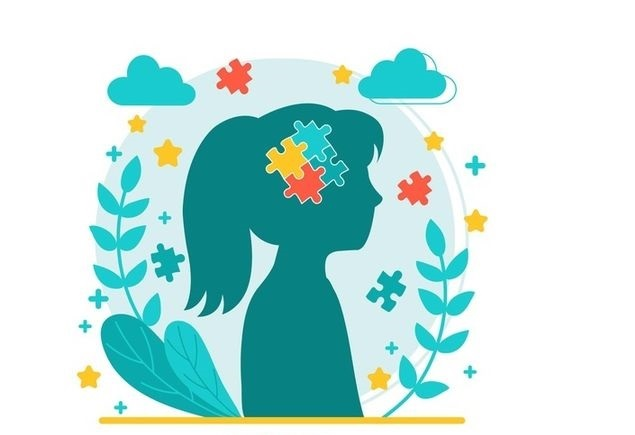
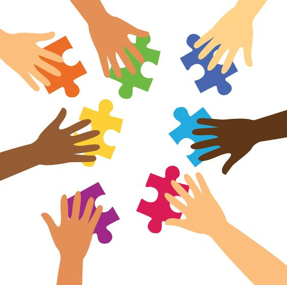
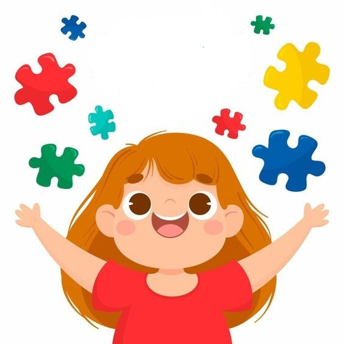

Overview
Autism spectrum disorder (ASD) is a neurological and developmental disorder that affects how people interact with others, communicate, learn, and behave. Although autism can be diagnosed at any age, it is described as a "developmental disorder" because symptoms generally appear in the first 2 years of life.

- Difficulty with communication and interaction with other people
- Restricted interests and repetitive behaviors
- Symptoms that affect their ability to function in school, work, and other areas of life
Autism is known as a "spectrum" disorder because there is wide variation in the type and severity of symptoms people experience.
People of all genders, races, ethnicities, and economic backgrounds can be diagnosed with ASD. Although ASD can be a lifelong disorder, treatments and services can improve a person's symptoms and daily functioning. The American Academy of Pediatrics recommends that all children receive screening for autism. Caregivers should talk to their child’s health care provider about ASD screening or evaluation.
Signs and symptoms of ASD
The list below gives some examples of common types of behaviors in people diagnosed with ASD. Not all people with ASD will have all behaviors, but most will have several of the behaviors listed below.
Social communication / interaction behaviors may include:
- Making little or inconsistent eye contact
- Appearing not to look at or listen to people who are talking
- Infrequently sharing interest, emotion, or enjoyment of objects or activities (including infrequent pointing at or showing things to others)
- Not responding or being slow to respond to one’s name or to other verbal bids for attention
- Having difficulties with the back and forth of conversation
- Often talking at length about a favorite subject without noticing that others are not interested or without giving others a chance to respond
- Displaying facial expressions, movements, and gestures that do not match what is being said
- Having an unusual tone of voice that may sound sing-song or flat and robot-like
- Having trouble understanding another person’s point of view or being unable to predict or understand other people’s actions
- Difficulties adjusting behaviors to social situations
- Difficulties sharing in imaginative play or in making friends
Reference:
National Institute of Mental HealthData & Statistics on Autism Spectrum Disorder
This section presents relevant articles on Autism Spectrum Disorder (ASD) statistics, addressing different perspectives such as prevalence, inclusivity regarding race, ethnicity, and socioeconomic status, gender distribution in ASD occurrence, and its relationship with other developmental disabilities. These studies are sourced from the CDC - Centers for Disease Control Spectrum Disorder and contribute to a more comprehensive understanding of ASD. CDC - Centers for Disease Control Spectrum Disorder
Prevalence: About 1 in 36 children has been identified with autism spectrum disorder (ASD) according to estimates from CDC’s Autism and Developmental Disabilities Monitoring (ADDM) Network.
 Read articleInclusivity: ASD is reported to occur in all racial, ethnic, and socioeconomic groups.
Read articleGender Distribution: ASD is nearly 4 times more common among boys than among girls.
Read articleDevelopmental Disabilities: About 1 in 6 (17%) children aged 3–17 years were diagnosed with a developmental disability, as reported by parents, during a study period of 2009-2017. These included autism, attention-deficit/hyperactivity disorder, blindness, and cerebral palsy, among others.
Read summaryHow Is Autism Treated?
 Every child with autism spectrum disorder (ASD) has different needs, so the treatment plan needs to be individualized. Since autism is not an illness and therefore can't be "cured," the goal is to help a child gain and hone communication, interpersonal, and behavioral skills to better navigate daily life and,
whenever possible, function independently.
This may involve a variety of different therapies, including speech therapy and social skills therapy, as well as prescription drugs to help manage issues with focus and commonly co-occurring mental illnesses. Lifestyle modifications and practices can help reinforce the goals of therapy at home.
This article looks at the various treatments that may be used if a child is diagnosed with autism. It also explores the role that complementary and alternative therapies may play in the treatment plan. Read article
Support and Help
States should provide support centers for autistic individuals and their families. In Ireland, the Irish Society for Autism is an organization that offers assistance and support to autistic children and their families.
Their work includes educational programs, support services, and advocacy to ensure that the needs of autistic children are met. Additionally, the society plays a crucial role in reducing stigma and promoting understanding about the autism spectrum.
For more information about the Irish Society for Autism's work, please visit the organization's official website.